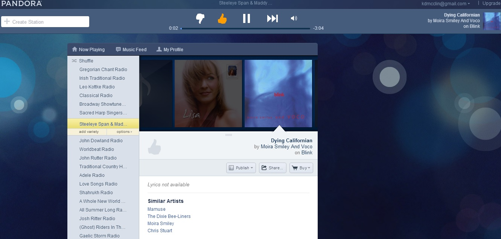
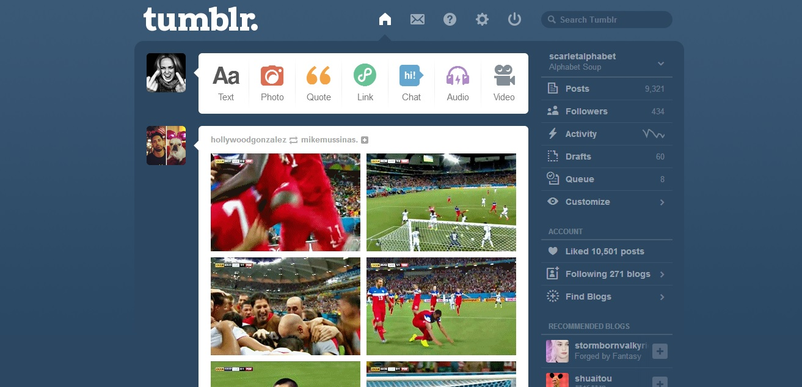
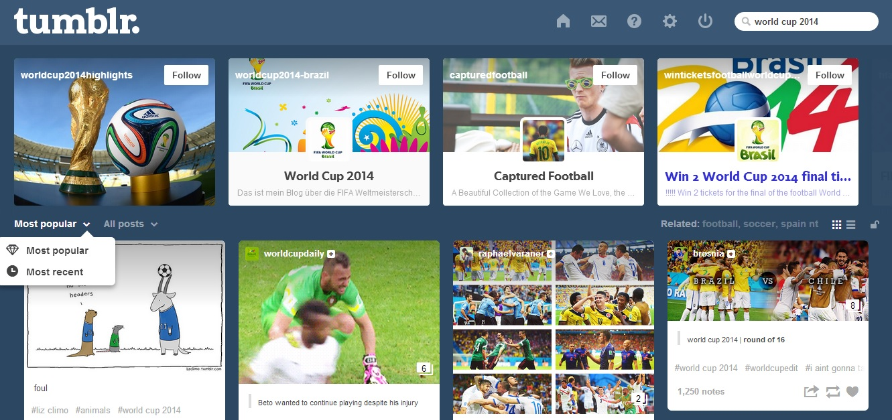
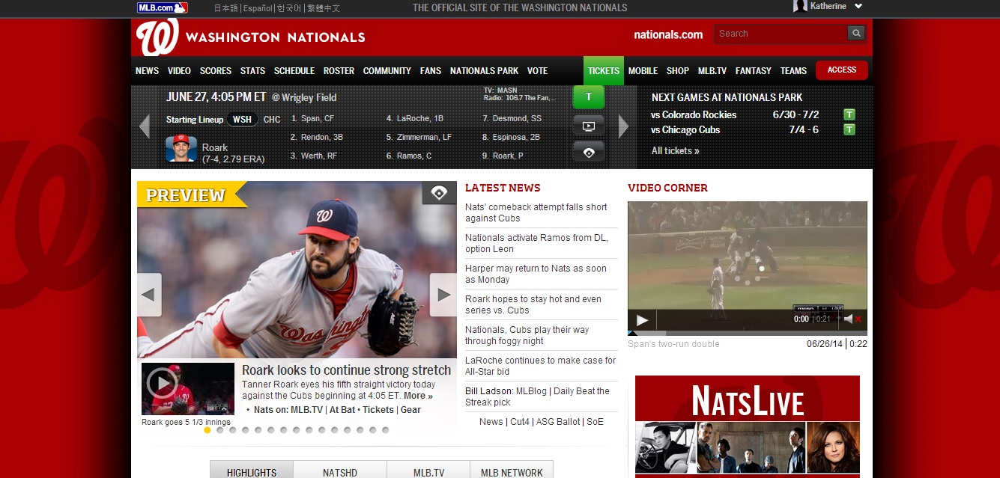
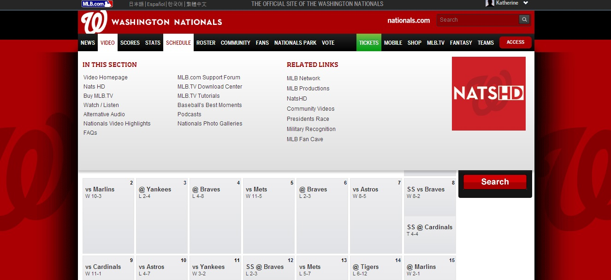

Evaluating Websites
When considering the design of websites I chose to focus on three of the websites that I visit the most frequently and enjoy visiting.
Pandora
Pandora is one of my favorite websites primarily because I love music. It's an easy way to listen to music wherever I have internet access, and can be great at gatherings to put on a suitable background music play list without having to have it on my own computer or phone. I also love Pandora because of the great music that I have "discovered" through it. Many of my current top played tracks on iTunes I first heard through a station I created on Pandora.
The site is pretty but basic. The simple blue background creates enough interest so that it's not boring, but not so much that it detracts from the site's purpose. It doesn't have a traditional homepage, but if you don't stay logged in it will automatically take you to your station list once you log in. It's very easy to switch to another station or start a new station via the sidebar on the left. You can even select a previously curated station.
Pandora solves the problem of introducing you to new music based on a category that you already enjoy. It uses the Music Genome Project to stream similar songs based on your initial input. While I may not like every song, the purpose is wonderful and many of its songs are great. The content is also quite extensive, depending on what the user inputs (how many stations you want to create). The songs run the gamut from depressing to exhilarating, but that's an accurate mirror of music in general. Overall I'd consider it a success given its purpose.
Tumblr
Tumblr is another site that I enjoy. I like Tumblr because I'm able to easily browse various things that I'm interested in, post about those interests, and connect with people who have similar interests while still maintaining some degree of anonymity.
Tumblr is intended to solve the problem of bringing together people and topics in the same place without the more life-invasive quality of Facebook, the brevity of Twitter, and the isolated nature of traditional blogs. It has text, photos, images, videos, audio, and links about pretty much anything imaginable.
The purpose of Tumblr is perfectly suited to the problem it solves. The content and focus are varied depending on the blog and post. Some people maintain a blog with a strict focus on one topic (a particular show, photography, fashion, sports) while others post a random mix of whatever interests them. Sometimes the tv or movie content contains spoilers or the other content is disturbing, but if people tag appropriately than you can use a third-party extension to block such posts. Tumblr itself is not involved in this process however—a major downside of the site.
Finding what you're looking for on Tumblr depends on who you follow and how well people tag their posts with relevant tags. The search bar is conveniently placed at the top of the page, but if people don't tag their original posts with relevant tags then you won't find them searching. Sometimes people tag irrelevant posts with those tags, and sometimes tags are very broadly descriptive so it can be hard to find the kind of post you want. Their new patchwork display format is not as helpful as their old format was, but perhaps that's a matter of just getting used to it. The ability to search by most popular or most recent posts as well as searching by a specific post type (text, photo, quote, link, chat, audio, and video) is helpful though.
Excluding things that are outside of Tumblr's control (human error, people being jerks, and so on), Tumblr is a pretty good website for its purpose. It could be improved by integrating some kind of post blocking feature (although that would always depend on individual bloggers labelling things appropriately) and making it easier to search through tags.
Nationals.com
The third website that I looked at was Nationals.com. It's one of my favorite sites because I love baseball and it's my favorite team's site.
Your eye is first drawn to the rotating images and stories, as well as the auto play video of some key play or interesting moment from a recent game or related event. When visiting it during game play the first of the rotating images and story links will be the game in progress—getting straight to the point. Regardless of when you visit though, right away you can see what I consider to be one of its main downsides, namely the aforementioned automatically played video. There used to be a feature to disable this, but apparently not anymore. If I want to play the video I am perfectly capable of pressing play myself thanks. To be fair, every MLB team has the same format (just different colors, images, and video), so it's someone at Major League Baseball's decision how to format the site, not anyone with the team itself.
The website solves the problem of disseminating information that is anyway related to the team or MLB in general. It has a great deal of content, from video clips to news articles to blog posts to game images and so on. Because the site has so much content it's not easy to browse through it all, but it's fairly easy to browse to your specific goal. It's pretty easy to find what you're looking for from the homepage. Most people probably use it to find out about current or upcoming games, to buy tickets, to read blog posts or news articles, and to watch video clips and all of these are readily accessible from the homepage. It's also fairly easy to navigate from other pages as either the drop down menu is available or the page has a button to go back to their homepage.
The site sells tickets for the team's games, which I have bought (though often I use re-sellers like stubhub.com or scorebig.com because they're cheaper). It also links to the team's site on MLB's shop website and I have occasionally bought items from there if they don't have them at the ballpark or they're not cheaper elsewhere. Given that the site's purpose is probably more sales driven than MLB would perhaps admit, but that it is also a major source of information, I'd consider it a successful website.